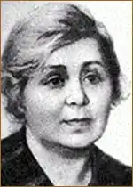

Народилася Лідія Олександрівна Компанієць у селі Новогригоровці Запорізької області. Коли Лідія Олександрівна згадує своє дитинство, то в уяві постає причепурена бабусина хата, у якій долівка встелена пахучою травою, а на покуті — Шевченків портрет у барвистому рушникові...
Потім сім'я переїхала на маленьку станцію Світлодолинську Придніпровської залізниці, де батько працював залізничником. А ще через кілька років оселилися в селі Астраханці коло Мелітополя. Тут маленька Ліда з братами пішла вчитися.
Ще в школі почала писати вірші, які друкувалися в шкільній стінгазеті та в домашньому рукописному журналі "Колючка", що його видавали двоє старших братів. Згодом сім'я переїжджає в Ленінградську область, і Ліда навчається в Ленінградському технікумі культосвітньої роботи на бібліотечному відділі. Але її вабила робота в газеті. Отож, скінчивши технікум, ще зовсім молоденькою дівчиною, пішла працювати до піонерської газети. Був при газеті і літературний гурток, яким керував поет Ілля Садоф'єв. З Ленінграда вона згодом повернулася на Україну до Нікополя. Нова газета, нові люди. Через два роки почалася війна. З маленьким сином Лідія виїхала у вугільне місто Караганду. Після Караганди — місто Грозний. І тут вона працювала в газеті. У 1944 виїхала до Києва і стала працювати в газеті "Київська правда" а згодом — в "Радянській Україні". У 1952 році вийшла збірка віршів для дітей "У всіх у нас діла". Саме тоді її прийняли до Спілки письменників. Про наслідки війни вона створила сценарій "Доля Марини", за яким у 1954 році був створений фільм. Згодом за її сценаріями були поставлені ще фільми "Коли співають солов'ї", "Літа дівочі" та мультфільм для дітей "Чому втекло кошеня".